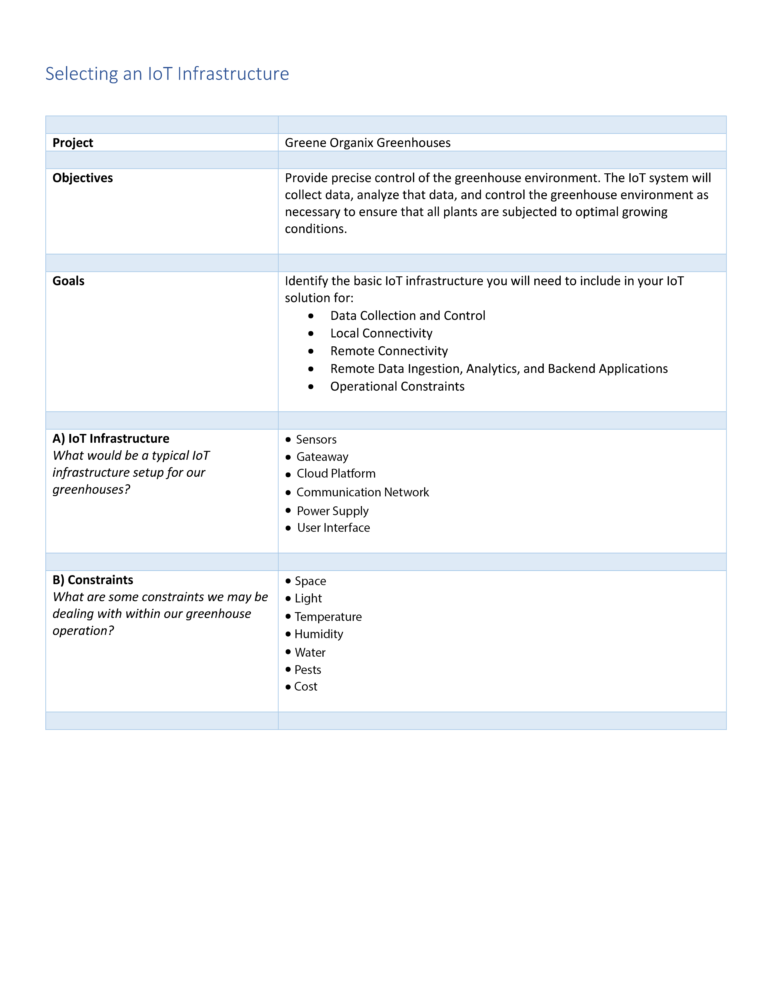

A typical Internet of Things (IoT)
infrastructure setup for greenhouses may include the following
components:
SENSORS: These devices collect data on various environmental and
operational parameters such as temperature, humidity, light
intensity, soil moisture, and plant growth.
GATEWAY: This device serves as the connection point between the
sensors and the rest of the IoT infrastructure. It can be a
standalone device or incorporated into a sensor.
NETWORK: This component enables communication between the
sensors, gateway, and other devices in the system. This can be
achieved through a wired or wireless network, such as Wi-Fi or a
cellular network.
CLOUD PLATFORM: This component enables data storage, processing,
and analysis of the data collected by the sensors. It can also
provide a user interface for accessing and managing the data.
ACTUATORS: These devices allow the system to perform automated
actions based on the data collected by the sensors and the
desired outcomes. For example, an actuator could be used to
control the temperature or humidity in the greenhouse.
CONTROLERS: These devices allow the system to be remotely
monitored and controlled, often through a smartphone or
computer.
CONSTRAINTS:
There are several constraints that you may face when operating a
greenhouse, including:
ENVIRONMENTAL CONDITIONS: Greenhouses rely on a controlled
environment to grow plants, but external factors such as
weather, temperature, and humidity can still affect the internal
environment.
LIMITED SPACE: Greenhouses often have limited space, which can
make it difficult to grow a diverse range of crops or to meet
demand.
COST: Greenhouse operations can be expensive to set up and
maintain, particularly if you are using advanced technologies
such as an IoT infrastructure.
PEST and DISEASEi CONTROL: Pests and diseases can pose a
significant threat to the health and productivity of greenhouse
crops.
WATER and NUTRIENT MANAGEMENT: Proper water and nutrient
management is essential for plant growth, but it can be
challenging to get the balance right and avoid over- or
under-watering.
ENERGY EFFICIENCY: Greenhouses rely on artificial light and
heating to maintain the optimal growing environment, which can
be energy-intensive and expensive.
A typical Internet of Things (IoT) infrastructure for a
greenhouse may include sensors to collect data on various
environmental and operational parameters, a gateway to connect
the sensors to the rest of the system, a network for
communication, a cloud platform for data storage and analysis,
actuators for automated actions based on the data, and
controllers for remote monitoring and control. The goal of an
IoT infrastructure in a greenhouse is to optimize and automate
various aspects of greenhouse operations, such as irrigation,
lighting, and pest control, in order to improve plant growth and
productivity. However, operating a greenhouse also comes with
several constraints, such as environmental conditions, limited
space, cost, pest and disease control, water and nutrient
management, and energy efficiency. By carefully considering
these constraints and the costs and benefits of any technology
investments, a university student can design an effective and
efficient IoT infrastructure for a greenhouse.
SMART HOUSE SYSTEM:
A smart home is a residence that uses internet-connected devices
to enable the remote monitoring and control of appliances and
systems, such as lighting, temperature control, security, and
home entertainment. Smart home systems can be controlled using a
mobile app or web interface and often include voice control
through virtual assistants such as Amazon's Alexa or Google's
Assistant. Some smart home systems are designed to work with
specific smart home devices, while others are compatible with a
range of devices from different manufacturers.
In a smart home system, the cloud refers to a network of servers
that are connected to the internet and are used to store,
process, and manage data. The data is stored in the cloud rather
than on a local device, such as a computer or smartphone.
In the context of a smart home system, the cloud is often used
to store data generated by smart home devices, such as sensor
readings, energy usage data, and control commands. This data can
then be accessed and analyzed remotely using a web interface or
mobile app. For example, a smart thermostat may collect data on
the temperature and humidity in a home, which can then be
accessed and analyzed using a cloud-based service to identify
patterns and optimize energy usage.
The use of the cloud in a smart home system can also allow for
greater flexibility and scalability, as it enables the addition
of new devices and features without the need to install new
hardware or software on the local network.
SMART DEVİCES:
Smart devices are internet-connected devices that can be used to
control, monitor, and automate various functions in a smart
home. Some examples of smart devices include:
Smart thermostats: These devices can be used to control the
temperature and humidity in a home and can be programmed to
optimize energy usage.
Smart lighting: Smart lights can be controlled and scheduled
using a mobile app or voice commands. Some smart lights can also
change colors or be set to mimic a sunset to help you relax in
the evening.
Smart security: Smart security systems can include door and
window sensors, security cameras, and motion detectors that can
be monitored and controlled using a mobile app.
Smart appliances: Smart appliances, such as refrigerators,
washing machines, and ovens, can be controlled and monitored
using a mobile app or voice commands.
Smart speakers: These devices, such as Amazon Echo and Google
Home, can be used to control other smart devices using voice
commands and can also provide information and entertainment,
such as playing music or answering questions.
WHAT IS ZIGBEE:
Zigbee is a wireless communication standard that is used for
connecting a wide range of devices, including smart home
devices. It operates in the 2.4 GHz frequency band and is
designed to be low-cost and low-power, making it suitable for
use in devices that require long battery life.
Zigbee is based on the IEEE 802.15.4 standard and uses a mesh
networking architecture, which means that devices can
communicate directly with each other or through intermediate
devices to extend the range of the network. This makes Zigbee
well-suited for use in smart home systems, as it allows devices
to communicate with each other even if they are not in direct
range of a central hub or router.
Zigbee is used in a variety of smart home devices, including
smart thermostats, smart lighting, and smart security systems.
It is also used in industrial automation and other applications
that require low-cost, low-power wireless communication.

Read More About IOT:
IOT and Physical Computing
Threat Modelling
NASSER OWAIS